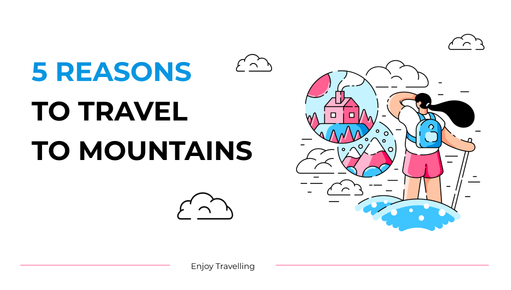

Hi! Welcome to my website. My name is Polina and this is a display of my digital
creations.
The word vitrina, mentioned in the title, means display in Russian. The first part of
this website is related to
planners and
trackers that I've designed. The second one is devoted to the pictures of the surroundings that I've
taken.
Designed in Figma
In this section I uploaded some of the products that I designed for myself or
commercial use.
Planners
Trackers
Commercial banners

Captured
Captured is a section revealing my passion for photography in 9 photos.
All of these are special to me because of the reminiscence and feelings they
bring.
Russia 
Mexico
USA